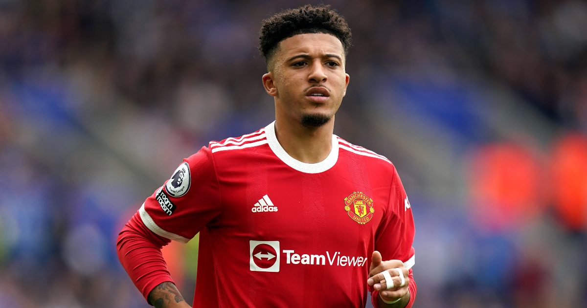

В пятницу пресс-служба французского "Пари Сен-Жермен" официально объявила о трансфере вратаря сборной России и "Краснодара" Матвея Сафонова. Самый обсуждаемый переход российского трансферного окна наконец свершился, несмотря на скепсис со стороны футбольной общественности и слухи о проблемах игрока с законом.
По информации СМИ, парижский суперклуб заплатил за переход голкипера порядка 20 миллионов евро, что сделало трансфер Сафонова самой дорогой покупкой вратаря в истории Лиги 1. Во французском чемпионате Матвей составит компанию своим соотечественникам Александру Головину, выступающему за "Монако", и Далеру Кузяеву, играющему за "Гавр".Аурелио Де Лаурентис высказался об интересе «ПСЖ» к Хвиче Кварацхелии.
«Не вижу проблем с Кварацхелией. Мы обсудим с ним и его агентами вопрос о продлении и сделаем ему предложение по контракту.
Есть человек, который, будучи президентом Ассоциации европейских клубов (Нассер Аль-Хелайфи – Sports), связывается с игроками без разрешения клуба, которому они принадлежат. Кто-то ведет себя правильно, а кто-то нет», – заявил президент «Наполи».Пауло Дибала почти наверняка окажется в «Манчестер Юнайтед». Он точно нужен?
Фил Бланш из Press Association выцепил довольного Уле Гуннара Сульшера в Кардиффе. Норвежец сказал в приватной беседе, что ждет еще несколько подписаний, но никакой конкретики не дал.
Тут все понятно: Магуайра еще не объявили, но очевидно, что следующим после англичанина станет аргентинец Пауло Дибала.
Главный тренер «Юве» Маурицио Сарри не рассчитывает на игрока, зато очень хочет то ли насолить «Интеру», то ли получить в «Ювентус» Ромелу Лукаку.
Какова бы ни была причина, в Манчестер вместо чемодана с кэшем за бельгийца отправляется Дибала.
Нужен ли он команде Сульшера или станет новым Санчесом? 
«Манчестер Юнайтед» планирует возобновить тренировки 8 июля. Джейдон Санчо и Мэйсон Гринвуд обязаны вернуться в Каррингтон на предсезонку, если к этому времени не покинут клуб.
ESPN сообщает, что англичанам и другим игрокам «Юнайтед», которые не участвуют ни в Евро, ни в Кубке Америка, сообщили, что они должны вернуться на тренировочную базу клуба к определенной дате.
.png)
.png)


 ,
,